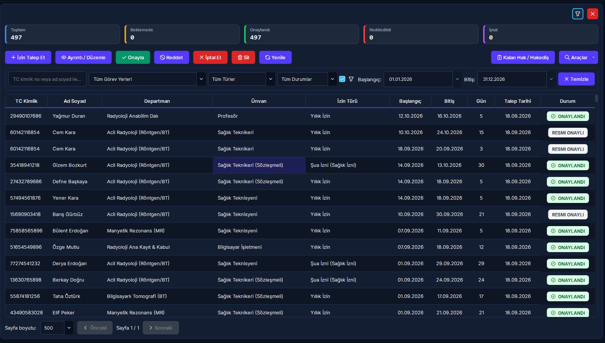
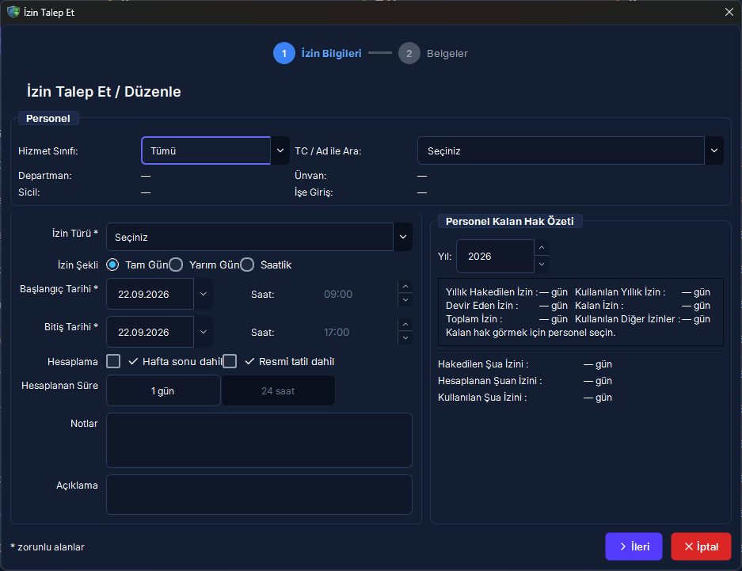

İzin Yönetimi, Şua Hakedişi & İzin Devir Motoru
Radyasyonla çalışan sağlık personelinin yasal Şua İzni (sağlık izni), yıllık izin, mazeret ve hastalık izinlerinin talebi, nöbet ve çakışma kontrolleri, yetkili onayı, bakiye düşümü, geçmiş yıl devir aktarımı ve EBYS/HBYS evrak entegrasyonu rehberi.
Hızlı Reçete: Radyasyon İzinleri ve Yasal Hakediş Süreci
Şua izni hak etme, nöbet kontrolü, yönetici onayı ile bakiye düşümü ve EBYS evrak kaydı
Personelin hak ettiği izinleri mevzuata uygun kullandırmak, nöbet aksamalarını önlemek ve bakiye kayıplarını sıfırlamak.
[İzin Talep Et] sihirbazından personeli ve tarihleri seçin, yönetici ekranından onaylayın veya web portalından [EBYS Kaydet] ile resmiyete dökün.
Nöbet çakışmaları engellenir, onay anında bakiye düşülür, iptal halinde bakiye iade edilir; şua izni 31 Aralık'ta devretmeksizin yanar.
🔍 5N1K Kural ve Arayüz Çözümleme Tablosu
İzin modülünde yer alan kontrollerin yasal dayanakları, çalışma mekanizmaları ve kullanıcı rolleri.
| NE? (Bileşen / Kontrol) | NEDEN? (Amacı) | NASIL? (Çalışma Mantığı) | NE ZAMAN? | KİM? |
|---|---|---|---|---|
|
İzin Tablosu & Arama (searchInput) Üst Filtre Çubuğu |
Departmandaki tüm izin hareketlerini ve onay durumlarını listelemek. | 300 ms gecikmeli debounced arama ile ad, soyad, TC ve EBYS no taranır; durum ve izin türü filtrelenir. | Rutin takip ve denetimlerde. | Yönetici, Süpervizör, İK |
|
Yeni İzin Talebi (+ İzin Talep Et) addButton (2 Adımlı Wizard) |
Personel adına mevzuata uygun izin kaydı açmak. | Adım 1'de personel seçilir ve anlık bakiye kartı açılır. Adım 2'de tarihler, tür, vekil ve açıklama girilir. | İzin talebi oluştuğunda. | Personel, Birim Amiri |
|
Şua İzni Hakedişi (RED-IZN-01) izin_kural_motoru.py |
Radyasyon çalışanlarının kanuni sağlık iznini hesaplamak. | Fiili çalışma süresine göre her 50 saatte 1 gün hesaplanır (tavan 30 gün). Cari yıl kazanımı takip eden yıl kullanılır; devretmez, 31 Aralık'ta yanar. | Yıllık izin planlamasında. | Radyasyon Çalışanları |
|
Çakışma & Nöbet Kilidi (RED-IZN-02) check_overlap / nobet_service |
Personelin nöbet gününde izne çıkmasını veya mükerrer izin almasını engellemek. | Talep edilen tarihler personelin onaylı/bekleyen izniyle veya nöbet çizelgesindeki aktif göreviyle kesişiyorsa işlem durdurulur. | İzin kaydetme anında. | Sistem (Otomatik Kilit) |
|
İzin Onayla (approveButton) Üst Araç Çubuğu (Yeşil) |
Bekleyen talebi onaylayıp bakiyeyi güncellemek. | İzin durumu 'Onaylandı' yapılır; personelin ilgili yıl için tanımlı kalan izninden gün sayısı anında düşülür. | Amir incelemesinden sonra. | Yönetici, Departman Sorumlusu |
|
İzin Reddet (rejectButton) Üst Araç Çubuğu (Kırmızı) |
Uygun görülmeyen izin talebini gerekçeli sonlandırmak. | Açılan diyalogda ret gerekçesi girilmesi zorunludur. Bakiye düşümü yapılmaz, durum 'Reddedildi' olarak arşivlenir. | Hizmet aksaması durumunda. | Yönetici, Süpervizör |
|
İzin İptali (cancelButton) Üst Araç Çubuğu (Turuncu) |
Kullanılmayacak onaylı izni geri çekip hakkı iade etmek. | İzin 'İptal Edildi' statüsüne çekilir; önceden düşülen izin günleri personelin bakiye havuzuna geri aktarılır. | Görevin iptal edilmesinde. | Yönetici, Süpervizör |
|
Devir Aktar (btnDevirAktar) İzin Hakediş Sayfası |
Geçmiş yıldan kalan yıllık izinleri yeni yıla aktarmak. | Sadece kapanmış geçmiş yıllar için çalıştırılır. Kurum tavanına kadar (azami 5 gün) devir yapılır; artan günler dondurulur/yanar. | Yıl başı devir döneminde. | Sistem Yöneticisi, İK |
|
Web Portalı EBYS Kaydı POST /api/izin/hbys-kaydet |
Resmi kurum evrak numarasını izin kaydına işlemek. | İlk evrak no girişinde izin doğrudan 'Resmi Onaylı' statüsü kazanır. Sonradan değiştirilmek istenirse onay masasına düşer. | Resmi yazı çıktığında. | Personel, İdari İşler |
Saha Mit Avcısı: "Kullanılmayan Şua İzinleri Bir Sonraki Yıla Devreder mi ya da Paraya Çevrilebilir mi?"
En Yaygın Radyasyon Mevzuatı YanılgısıYanlış İnanış: "Yoğunluktan ötürü bu yıl 30 günlük şua iznimi kullanamadım, seneye aktarılır 60 gün kullanırım veya kullanamadığım günlerin ücretini idareden talep edebilirim."
Doğru Gerçek: KESİNLİKLE HAYIR. 3153 sayılı Kanun, Radyasyon Güvenliği Yönetmeliği ve Sağlık Bakanlığı içtihatları uyarınca Şua İzni (sağlık izni), personelin vücudundaki radyasyon biyolojik hasarını tolere etmek ve hücresel onarımı sağlamak amacıyla verilmiş kamu düzenine ilişkin bir dinlenme hakkıdır. Şua izni ertelenemez, takvim yılı (31 Aralık) bittiğinde zaman aşımına uğrayarak yanar, sonraki yıla devredilemez veya nakdi tazminata dönüştürülemez. RADPYS hakediş motoru bu nedenle şua izinlerini cari yılda kilitler ve yıl sonu devrine izin vermez.
🔄 İzin Talep, Çakışma Denetimi ve Onay Akış Şeması
Personel izin talebinden bakiye kontrolüne, nöbet çakışmasından EBYS evrak kaydına tam süreç döngüsü.
graph TD
A(["İzin Talebi Başlatılır: Masaüstü / Web"]) --> B{"Tarihler Başka İzinle Çakışıyor mu?"}
%% Çakışma Denetimleri
B -->|Evet| C["HATA: Çakışan İzin Bulundu - İşlem Durdurulur"]
B -->|Hayır| D{"Talep Tarihlerinde Aktif Nöbet Var mı?"}
D -->|Evet| E["HATA: Nöbet Çakışması - Önce Nöbet Değiştirilmelidir"]
D -->|Hayır| F{"Personelin Kalan İzin Bakiyesi Yeterli mi?"}
%% Bakiye ve Onay Kuyruğu
F -->|"Yetersiz"| G["HATA: Yetersiz İzin Bakiyesi Uyarısı"]
F -->|"Yeterli"| H["Talep Kaydedilir: Durum = Onay Bekliyor"]
H --> I{"Yetkili Amir Kararı"}
I -->|Reddet| J["Zorunlu Gerekçe Girilir: Durum = Reddedildi"]
I -->|Onayla| K["Durum = Onaylandı"]
%% Bakiye Düşümü ve İptal
K --> L["İzin Günleri Bakiye Havuzundan Otomatik Düşülür"]
L --> M{"Personel İzne Çıkamadı mı?"}
M -->|"İptal Talebi"| N["İptal Et Butonu: Bakiye Eksiksiz İade Edilir"]
%% EBYS / HBYS Entegrasyonu
L --> O{"EBYS / HBYS Evrak No Girildi mi?"}
O -->|Evet| P["Durum = Resmi Onaylı Olarak Kilitlenir"]
O -->|Hayır| Q["İdari Onay Statüsünde Kalır"]
style A fill:#06b6d4,stroke:#0891b2,stroke-width:2px,color:#fff
style C fill:#ef4444,stroke:#dc2626,stroke-width:2px,color:#fff
style E fill:#ef4444,stroke:#dc2626,stroke-width:2px,color:#fff
style G fill:#f59e0b,stroke:#d97706,stroke-width:2px,color:#fff
style K fill:#10b981,stroke:#059669,stroke-width:2px,color:#fff
style P fill:#8b5cf6,stroke:#7c3aed,stroke-width:2px,color:#fff
style N fill:#f97316,stroke:#ea580c,stroke-width:2px,color:#fff
🖼️ Arayüz Ekran Görünümleri
İzin Listesi kokpiti ve 2 adımlı İzin Talep Sihirbazı ekranları.


📋 Adım Adım İşlem Rehberi
Saha operasyonlarında en sık kullanılan 5 ana işlemin uygulama adımları.
2 Adımlı Sihirbaz ile Yeni İzin Talebi Oluşturma
- İzin Listesi ekranının sol üst köşesindeki mor [+ İzin Talep Et] butonuna tıklayın.
- Açılan sihirbazın 1. Adımında:
- Personel Seçimi: TC Kimlik veya Ad ile personeli bulun.
- Bakiye Kontrolü: Sağ taraftaki panelde personelin cari yıldaki Yıllık Hakedilen, Devir Eden ve Şua İzni kalan haklarını kontrol edin.
- Alt kısımdaki [İleri >] butonuna basarak 2. Adıma geçin:
- İzin Türü: Yıllık İzin, Şua İzni (Sağlık İzni), Mazeret İzni vb. seçin.
- Başlangıç / Bitiş Tarihleri: Tarihleri seçtiğinizde sistem resmi tatil ve hafta sonu parametrelerine göre net gün ve saat süresini otomatik hesaplar.
- Vekil Personel: İzin esnasında görevi devralacak meslektaşınızı belirleyin.
- [Kaydet] butonuna basın. Çakışma ve nöbet kontrolleri olumluysa talep 'Onay Bekliyor' statüsünde listeye düşecektir.
İzin Taleplerini İnceleme, Onaylama ve Gerekçeli Reddetme
- İzin Listesinde üst filtrelerden durumu 'Beklemede' olarak seçin.
- İncelenmek istenen satırı tıklayın veya detaylarını görmek için [Ayrıntı / Düzenle] butonuna basın.
- Onaylamak İçin: Yeşil renkli [Onayla] butonuna tıklayın. Sistem personelin izin bakiyesinden gün sayısını anında düşer ve satır rozetini yeşil 'ONAYLANDI' yapar.
- Reddetmek İçin: Kırmızı renkli [Reddet] butonuna tıklayın. Açılan pencereye ret gerekçesini yazıp onaylayın. Durum 'REDDEDİLDİ' olur, personelin bakiyesine dokunulmaz.
Onaylı İzni Güvenle İptal Etme ve Bakiye İadesi
- Önceden onaylanmış ancak acil görev, nöbet veya plan değişikliği nedeniyle çıkılamayan izni listeden seçin.
- Üst araç çubuğundaki turuncu [İptal Et] butonuna basın.
- Ekrana gelen onay uyarısında 'Evet' dediğinizde sistem izin kaydını 'İPTAL EDİLDİ' statüsüne alır.
- Önceden personelin bakiyesinden düşülen tüm izin günleri, personelin izin havuzuna otomatik ve eksiksiz olarak geri iade edilir.
- Not: Onaylı izinlerin kalıcı olarak silinmesi yasal denetim izi gereğince engellenmiştir; daima İptal Et işlemi uygulanmalıdır.
İzin Hakedişlerini İnceleme ve Geçmiş Yıl Devri Aktarma
- İzin Listesi sağ üst araç çubuğundaki [Kalan Hak / Hakediş] butonuna veya sol menüden hakediş sayfasına geçin.
- Yıl seçicisinden incelemek istediğiniz takvim yılını belirleyin. Tüm personelin hakediş, devir ve kullanılan gün toplamları listelenir.
- Ocak ayı başında geçmiş tamamlanmış yıldan kalan izinleri aktarmak için [Devir Aktar] butonuna tıklayın.
- Sistem kurum parametresindeki tavan sınırını (en fazla 5 gün) dikkate alarak personelin bakiyesini yeni yıla aktarır. Kalan fazlalık günler mevzuat uyarınca dondurulur.
Web Portalından İzin Talebi ve EBYS Evrak Numarası Eşleştirme
- Saha personeli veya amir kurum içi Web Portalına (`web_portal`) kullanıcı adı ve şifresiyle giriş yapar.
- [İzinlerim] sekmesinden hızlıca yeni izin talebi gönderir veya onaylı izinlerinin listesini görüntüler.
- Kurum genel evrak biriminden resmi EBYS onay yazısı çıktığında, izin satırındaki [EBYS Kaydet] formuna resmi evrak sayısı ve tarihini girer.
- Sistem ilk evrak kaydında izni doğrudan 'RESMİ ONAYLI' statüsüne yükseltir ve masaüstü yönetim tablosuna anında yansıtır.
❓ Sıkça Sorulan Sorular (SSS)
Saha çalışanlarının izin hakları ve mevzuat kuralları hakkında en çok merak ettiği konular.
Şua izni hak etmek için kaç saat fiili radyasyon çalışması gerekir?
Mevzuat ve RADPYS kural motoru gereğince (RED-IZN-01), radyasyon denetimli alanlarında fiilen çalışılan her 50 saatlik süre 1 günlük şua izni kazandırır. Yıllık toplam hakediş en fazla 30 takvim günüdür. Bir takvim yılında çalışılan süreler karşılığında kazanılan şua izni, takip eden yılda kullandırılır.
İzin talebi gönderirken neden 'Nöbet Çakışması Uyarısı' alıyorum?
RADPYS, nöbet hizmetlerinin aksamaması için izin motoru ile nöbet planlama modülünü entegre çalıştırmaktadır (RED-IZN-02). Talep ettiğiniz tarihlerde aktif nöbet çizelgesinde üzerinize yazılmış bir nöbet görevi bulunuyorsa izin talebi engellenir. Bu durumda önce nöbet sorumlunuzla görüşerek nöbetinizi devretmeli veya takas etmelisiniz.
Onaylanmış veya Resmi Onaylı bir izni tablodan silebilir miyim?
Hayır. Resmi denetim izini korumak amacıyla onaylanmış veya resmi EBYS numarası işlenmiş izinlerin doğrudan silinmesi engellenmiştir. Eğer personelin izni iptal edilecekse [İptal Et] butonu kullanılır. Bu işlem izin kaydını silmeden iptal eder ve düşülen günleri personelin kalan bakiye havuzuna otomatik olarak iade eder.
Geçmiş yıldan kaç gün izin devredilebilir? Cari yıl içinde devir yapılır mı?
Devir aktarımı yalnızca takvim yılı tamamlanmış geçmiş yıllar için uygulanabilir. Devam eden cari yıl bitmeden yeni yıla devir yapılamaz. Kurum parametrelerine göre devredilebilecek azami yıllık izin süresi en fazla 5 gündür. Tavanı aşan kalan izin günleri mevzuat gereğince yeni yıla devretmez ve dondurulur.